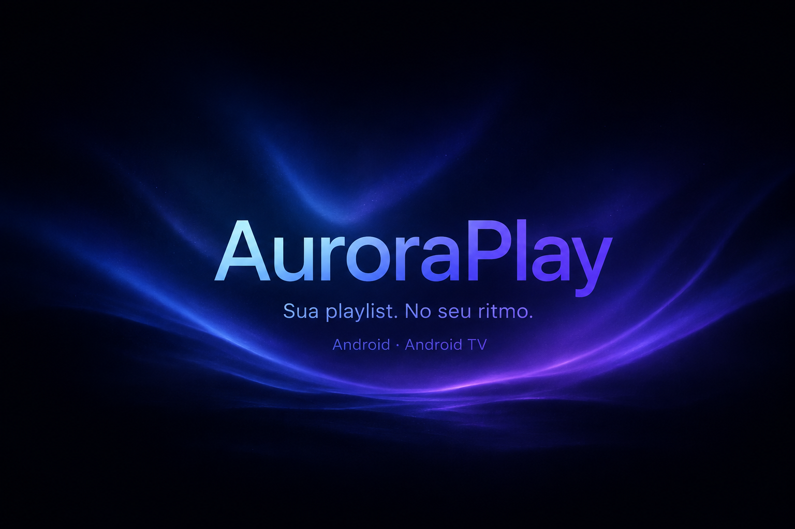

Ao vivo, com contexto.
Navegue por canais e categorias, confira a prévia e acompanhe o guia de programação quando a sua playlist disponibilizar esses dados.
Do canal ao vivo à sua próxima maratona. Reúna suas conexões, filmes e séries em uma experiência feita para você.
Você conecta sua própria playlist Xtream. O app não fornece canais ou assinaturas.
Prévia ilustrativa · o catálogo depende da sua conexão.
FEITO PARA O SEU DIA A DIA
Uma biblioteca organizada, reprodução do seu jeito e seus dados sempre à mão.
Navegue por canais e categorias, confira a prévia e acompanhe o guia de programação quando a sua playlist disponibilizar esses dados.
Filmes e séries com detalhes, temporadas e episódios. Favoritos e “continuar assistindo” deixam o próximo play mais perto.
Interface para celular e Android TV, além de transmissão para dispositivos Cast compatíveis. A reprodução depende do formato e do servidor.
Perfis, playlists com link, login e senha, favoritos, histórico e ajustes em um arquivo. Escolha uma pasta local, SD, USB ou um provedor como o Drive no seletor do Android.
PRONTO PARA DAR PLAY?
Instale o aplicativo e conecte sua playlist para começar.
SHA-256 do arquivo de distribuição:
Carregando código…POR DENTRO DO AURORAPLAY
Conheça os recursos disponíveis na versão atual do aplicativo.
Áudios, legendas, trailers, guia, downloads e transmissão para TV dependem do conteúdo, do servidor e do aparelho. O AuroraPlay organiza e reproduz a conexão que você fornecer.
SEM FICAR NO ESCURO
A sincronização mostra o que está acontecendo, continua ao sair da tela e avisa quando terminar. Se precisar, cancele pela notificação.
Etapa 2 de 3: filmes…
Permita as notificações para acompanhar fora do app.
DO DOWNLOAD AO PRIMEIRO PLAY
Tenha em mãos o endereço do servidor, o login e a senha da sua conexão Xtream.
Use o botão de download desta página. O arquivo termina em .apk e funciona no Android 7.0 ou superior.
Abra o APK. Se o Android solicitar, permita que o navegador ou gerenciador de arquivos instale aplicativos desta fonte.
Conclua a instalação e crie seu perfil. Se já tem um backup completo, você pode restaurá-lo para recuperar seus dados.
Em Minhas conexões → +, informe servidor, login e senha. Aguarde a sincronização e escolha o que assistir.
Na Android TV: transfira o APK para a TV e abra-o por um gerenciador de arquivos compatível. As etapas e permissões variam por aparelho.
TROCOU DE APARELHO?
Em Ajustes → Backup em arquivo, salve seus dados na pasta que preferir. No outro aparelho, escolha Restaurar de arquivo. A senha da playlist é recuperada automaticamente quando está presente no backup.
Saiba o que entra no backup ↗Proteja o arquivo com uma senha para restaurá-lo em outro aparelho. A exportação JSON sem proteção também está disponível.
EM CONSTANTE EVOLUÇÃO
Melhorias que deixam o uso diário mais simples. Baixe a versão atual por esta página.
Link, login e senha passam a fazer parte do arquivo. O seletor permite provedores de nuvem, como Google Drive, além das pastas locais e externas disponíveis.
Backup manual em arquivo, restauração dos dados e exclusão de downloads. Substituiu a integração direta com a API do Google Drive.
Atualizações dentro do app. Em Ajustes → Atualizações do app, consulte novas versões, acompanhe o download e escolha quando instalar. O download automático usa Wi-Fi. Se sua versão é anterior à 1.34.0, instale primeiro o APK desta página.
ANTES DO PRIMEIRO PLAY
Instalação, playlists, backup e os detalhes que fazem diferença.
Entenda a privacidade ↗Não. O AuroraPlay é um reprodutor para suas próprias conexões Xtream. Você precisa de um servidor, login e senha fornecidos por um serviço ao qual tenha acesso. O aplicativo não vende assinaturas nem fornece uma playlist.
Celulares e tablets com Android 7.0 ou superior e aparelhos com Android TV compatíveis com a instalação de APKs. O funcionamento de cada mídia e do Cast depende dos formatos, do servidor e do dispositivo. Não há versão para iPhone ou navegador.
O Google pode pedir uma análise de APKs que ainda não conhece. Escolha “Verificar app” e aguarde o resultado. A assinatura de produção identifica as atualizações do AuroraPlay; ela não representa uma aprovação do Google nem garante a ausência desse aviso.
Baixe o APK novo e instale por cima da versão atual, sem desinstalar. A atualização precisa ter o mesmo identificador e uma assinatura compatível. A versão 1.34.0 inclui migração da assinatura das versões anteriores. Salve um backup antes de atualizar. Se o Android recusar, confira se você usa a edição de distribuição ou uma edição de testes.
Perfis, conexões com link, login e senha, favoritos, histórico de reprodução e ajustes. Downloads, vídeos, catálogo, cache, fotos locais e biometria não são incluídos. Você pode proteger o arquivo com senha. Se escolher JSON sem proteção, as senhas ficam legíveis: guarde o arquivo em uma pasta privada.
Um backup completo restaura a senha da playlist automaticamente e agenda a atualização do catálogo. Se o arquivo estiver protegido, primeiro informe a senha escolhida na exportação. Arquivos antigos da versão 1.30.0 não tinham senhas; nesse caso, use uma cópia mais recente ou cadastre novamente a conexão. Não existe uma etapa separada de “Salvar senha”.
Sim, quando o Drive estiver disponível no seletor de arquivos do Android. Instale e abra o aplicativo do Drive com sua conta conectada e procure a conta no menu lateral ao salvar. Você não precisa configurar Google Cloud. A transferência do arquivo depende do provedor escolhido.
Confira a internet e use Minhas conexões → Testar. Depois, toque em Atualizar. A notificação e a tela mostram as etapas. Se as credenciais forem recusadas, confirme o acesso com o responsável pela sua playlist. Para ver a notificação, permita notificações nas configurações do Android.
Filmes e episódios compatíveis podem ser baixados para assistir pelo aparelho. A disponibilidade depende do servidor e do conteúdo. Canais ao vivo e a atualização do catálogo precisam de conexão com a internet. Os vídeos baixados não vão para o backup.
O perfil infantil aplica filtros com base nos dados e categorias disponíveis no catálogo. A classificação fornecida pelo servidor pode estar incompleta; o filtro não substitui a supervisão de um responsável. Perfis também podem usar PIN e biometria quando disponíveis.
Sim. A partir da 1.34.0, o app consulta o GitHub diariamente e pode baixar novas versões automaticamente no Wi-Fi. Você controla essa opção em Ajustes → Atualizações do app e escolhe quando instalar. A instalação usa a confirmação do Android. Para receber essa função pela primeira vez, baixe o APK desta página e instale sobre sua versão atual.
Precisa relatar um problema? Informe a versão do app, o modelo do aparelho e o que aconteceu. Não publique seu backup, login, senha ou link de playlist com credenciais.
Relatar um problema no GitHub ↗
Android 7.0+ · Suas próprias playlists · Seus dados com você